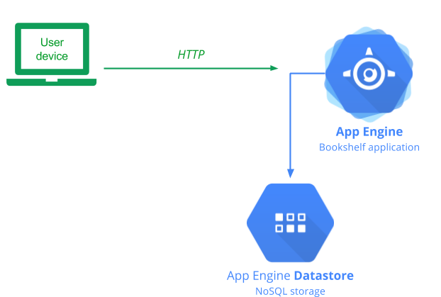
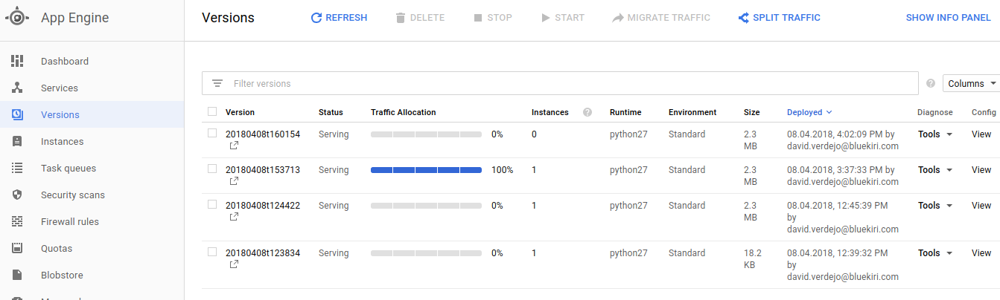
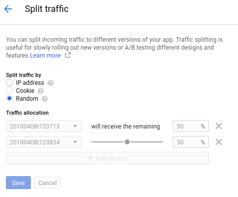

App Engine is a managed computing environment that lets you focus on writing and running code. As you see in this lab, you do not need to create, configure, or manage any servers, storage, or networks to get started. App Engine handles all of the web traffic generated by your users and automatically scales to meet changes in traffic levels.
Bookshelf is a simple Python web application that lets users create and manage a list of books. The application uses the Flask web microframework to coordinate reading and writing to storage. You can also use a variety of other frameworks to build Python applications on App Engine, including webapp2, and Django.

Open the Google Cloud Platform Console, and if necessary, select the "demo-gcp" project.
Previously, we have created a repository called default with the solution.
In the top right corner of the console window, click the Activate Google Cloud Shell button ().
Create a directory for the repository (check if you have created before. In this case, remove the folder)
mkdir cp100
Change to the new folder
cd cp100
Clone the repo
gcloud source repos clone default
Change to the App Engine folder
~/cp100/default/app-engine
In the top right corner of the Google Cloud Shell, click over "Launch code editor" button ().
You are presented with a list of directory and file names that make up the source code for this lab.
Click app.yaml.
An App Engine app.yaml configuration file includes a variety of configuration data as required, and optional elements, used to deploy and manage the behavior of your application.
Note in particular, on line 19 that the application runtime is set to Python version 2.7.
Also note, that lines 23 through 25 define the only script handler for this application, that describes how all requests to the application (/.* indicates all requests), should be handled by main.app. A mapping typically defines a URL pattern to match, and the script to be executed.
Click main.py.
This file imports the bookshelf code and loads any relevant configuration data into the application.
Click config.py.
This file is used to manage configuration data that is specific to your project and copy of the application.
Click / > app-engine > bookshelf.
You are presented with another list of directory and file names that make up the source code for the Bookshelf application.
Return to Cloud Shell and make sure to change to the directory containing the code
cd ~/cp100/default/app-engine
To run the application, we need to install a number of third-party libraries that the Bookshelf application uses
cat requirements.txt
Download the dependencies before deploy the application in the folder lib (libraries you installed are loaded from the lib directory using the code in appengine_config.py that App Engine automatically loads when a new instance of your application is started)
pip install -r requirements.txt -t lib
Type the following command to deploy the application
gcloud app deploy
The system asks you into which GCP region you want to deploy your application (11 for europe west).
You are asked to confirm that you want to proceed with the deployment. Type Y and press return.
You can now visit and test the deployed Bookshelf application.
In the Cloud Platform Console, click Compute > App Engine.
In the top right-hand corner of the Dashboard, click the link to your deployed application. The link takes the format:
<project-id>.appspot.com
The Bookshelf application loads in a new browser tab.
When Bookshelf is first deployed, there is no test data included. To begin exploring the application click Add book.
On the ‘Add book' page:
We are going to update our application. Go to the Code Editor and open ~/cp100/default/app-engine/template/base.html and modify the title section. Finally, save the file.
Update the application
gcloud app deploy
We are going to update our application but now we are going to split traffic to check the new version. Go to the Code Editor and open ~/cp100/default/app-engine/template/base.html and modify the title section another time. Finally, save the file.
Update the application
gcloud app deploy --no-promote
Go to Google Console, App Engine > Versions and check the generated versions

Click over Split Traffic. Click over Add version and select the new version and split the traffic between the versions (select Random option) and finally click Save.

Go to the browser and update several times the home page to see the new version.
Finally send all the traffic to the new version.
First realize that you can't completely delete an App Engine application like you can a Compute Engine instance, by design.
Choice 1: you can disable the application, effectively shutting it off. To do this, go to App Engine > Settings (bottom left menu option) - click Disable application. You won't be billed for resources used for App Engine, however any storage resources in use will still be billed.
Choice 2: To completely delete the entirety of your App Engine project, shut down the entire project it is hosted in.